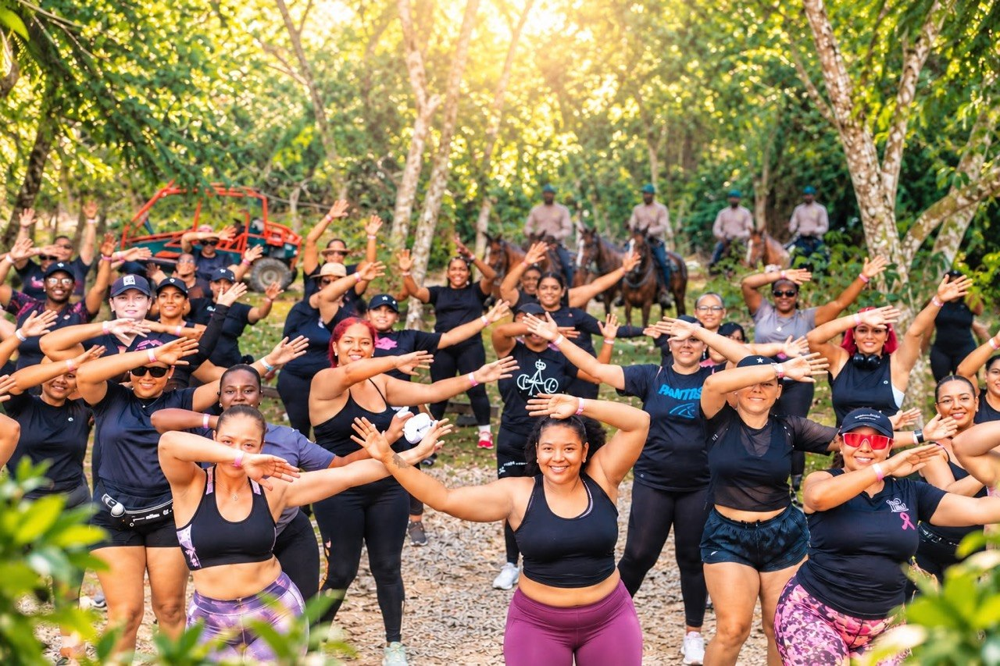

Momentos que Transforman
Nuestra comunidad en imágenes


Donde el alma guía y la disciplina sostiene. Un espacio donde las mujeres pueden detenerse, escucharse y volver a conectar con aquello que muchas veces queda en silencio.

Inscribirme¿Cómo volver a escucharnos?
Durante años muchas mujeres aprendieron a cumplir, resolver y sostener. Pero pocas encontraron espacios para detenerse, respirar y recordar quiénes son más allá de sus responsabilidades.
Conéctate con nuestra energía (Desliza para ver más)